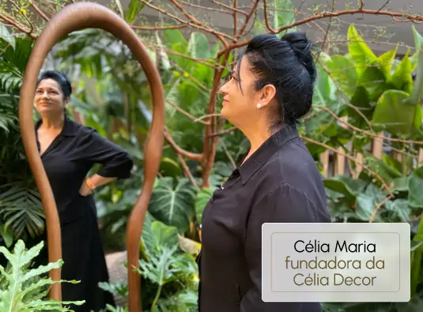

A trajetória da Célia Decor começou no calor de uma casa de família, movida pelo desejo sincero de Dona Célia Maria de transformar sua própria sala de estar.
Com habilidade natural e dedicação artesanal, ela mesma comprou o tecido e confeccionou cada detalhe da cortina com as próprias mãos. O resultado surpreendeu pelo caimento e elegância impecáveis, gerando elogios imediatos de todos os parentes e amigos que visitavam a casa.
Desde essa primeira peça costurada, seu marido Celso foi seu companheiro inseparável em cada passo — subindo em escadas, auxiliando nas medições, instalando trilhos e construindo a solidez que fez o casal "Celso & Célia" ser reconhecido como referência máxima em confiança no ABC.


“Cada degrau percorrido representa um ano de dedicação, cada detalhe expressa um sonho. Da primeira cortina costurada à mão à nossa nova casa, nossa maior conquista é ver famílias e lares acolhidos pelo nosso carinho.”
A foto na escada não é apenas um registro: é o símbolo de uma subida construída degrau por degrau, dia após dia, com honestidade e união.
Conforme o volume de projetos cresceu, os filhos de Dona Célia e Celso passaram a colaborar ativamente no negócio. Eles cresceram entre rolos de linhos puros, mesas de corte e tecidos nobres, absorvendo desde a infância o amor pela arte da tapeçaria e cortinaria.
Hoje, a segunda geração lidera a integração de tecnologias inovadoras, como automação motorizada silenciosa compatível com smartphones e assistentes de voz, sem jamais abrir mão do atendimento acolhedor e familiar que é a assinatura da Célia Decor.
Momentos marcantes da trajetória de Dona Célia e sua família em Santo André.
Dona Célia costura a primeira cortina em casa, com apoio de Celso, conquistando vizinhos e amigos pelo caimento impecável.
Formalização da empresa e criação do atelier próprio de confecção, garantindo padrão de alta costura em cada barra e prega.
Os filhos assumem papel executivo e expandem o portfólio para persianas motorizadas inteligentes e parcerias com grandes arquitetos.
Inauguração do showroom boutique na Rua Edu Chaves, 15, no Jardim Bela Vista, reunindo 30 anos de tradição em um espaço imersivo.